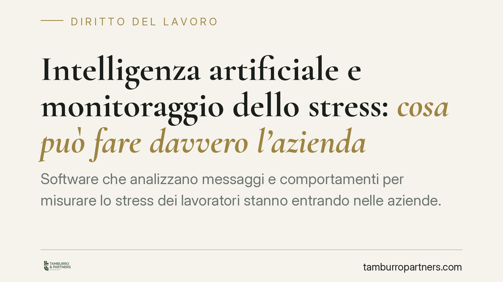

Intelligenza artificiale e monitoraggio dello stress: cosa può fare davvero l'azienda
Software che analizzano messaggi e comportamenti per misurare lo stress dei lavoratori stanno entrando nelle aziende. Ma l'AI Act europeo vieta espressamente l'inferenza delle emozioni sul luogo di lavoro, e lo Statuto dei lavoratori pone limiti rigidi al controllo a distanza. Capire cosa è davvero consentito evita sanzioni pesanti e contenziosi con i dipendenti.

AI e monitoraggio dello stress dei dipendenti: il nodo
Sempre più fornitori propongono sistemi di AI per il monitoraggio dello stress dei dipendenti: algoritmi che leggono le chat aziendali, i toni delle email o i tempi di risposta per stimare ansia, affaticamento o clima emotivo del team. La promessa è prevenire il burnout. Il problema è che questi strumenti, nella maggior parte dei casi, sono semplicemente vietati.
Occorre distinguere due cose che vengono spesso confuse. Un conto è il sondaggio anonimo sul clima aziendale, che raccoglie opinioni aggregate senza identificare chi risponde: strumento legittimo e diffuso. Altro conto è l'algoritmo che profila lo stato psicologico del singolo lavoratore, inferendo le sue emozioni dai dati che produce ogni giorno. È quest'ultima pratica a scontrarsi con il diritto.
Inquadramento normativo
Il riferimento più recente e diretto è il Regolamento UE 2024/1689 (AI Act). Tra le pratiche di intelligenza artificiale vietate, l'art. 5 proibisce l'immissione sul mercato e l'uso di sistemi di AI destinati a dedurre le emozioni di una persona fisica nel luogo di lavoro e negli istituti di istruzione, salvo ristrette eccezioni mediche o di sicurezza. Il legislatore europeo considera questa categoria di strumenti a rischio inaccettabile proprio per la relazione di soggezione tra impresa e lavoratore.
Sul piano interno, operano due presidi consolidati. L'art. 4 della L. 300/1970 (Statuto dei lavoratori) subordina gli strumenti dai quali possa derivare un controllo a distanza dell'attività a precise condizioni (accordo sindacale o autorizzazione dell'Ispettorato, oltre a esigenze organizzative, produttive o di sicurezza). L'art. 8 vieta al datore di svolgere indagini sulle opinioni del lavoratore e su fatti non rilevanti ai fini della valutazione dell'attitudine professionale. Il D.Lgs. 196/2003 (Codice Privacy), all'art. 113, rinvia espressamente proprio a queste tutele dello Statuto nel trattamento dei dati in ambito lavorativo.
Va segnalato che un recente provvedimento del Garante per la protezione dei dati personali è intervenuto su un caso di software per l'analisi emotiva nelle chat aziendali, nella direzione del divieto. In assenza di conferma degli estremi esatti, lo citiamo come orientamento e non come precedente numerato.
Implicazioni pratiche
Per il datore di lavoro il messaggio è netto: non è questione di come configurare lo strumento, ma del fatto stesso di usarlo. Il riconoscimento delle emozioni dei dipendenti rientra tra le pratiche proibite dall'AI Act, quindi non è sanabile né con un'informativa dettagliata né con il consenso.
Su quest'ultimo punto occorre essere chiari: nel rapporto di lavoro il consenso del dipendente non è una base valida, perché il GDPR richiede un consenso libero, che manca quando esiste uno squilibrio di potere tra le parti. Il lavoratore non è nella posizione di rifiutare realmente.
Il rischio sanzionatorio è concreto e su due fronti. Le violazioni delle pratiche vietate dall'AI Act espongono a sanzioni fino a 35 milioni di euro o al 7% del fatturato mondiale annuo. A ciò si aggiungono le sanzioni del GDPR (fino a 20 milioni o al 4% del fatturato) e i profili di illegittimità ai sensi dello Statuto, con possibili contenziosi individuali.
La responsabilità, inoltre, non ricade solo sull'azienda che utilizza il sistema. L'AI Act grava anche i fornitori del software (provider) che immettono sul mercato strumenti rientranti tra le pratiche vietate. Chi acquista una soluzione di questo tipo non si mette al riparo delegando al fornitore.
Cosa fare in concreto
- Mappare i software già in uso: verificare se piattaforme di HR analytics, strumenti di collaboration o tool di benessere aziendale includano funzioni di analisi del sentiment o delle emozioni individuali.
- Disattivare o non attivare qualsiasi modulo che inferisca lo stato psicologico del singolo lavoratore: è pratica vietata, non negoziabile tramite consenso.
- Privilegiare le rilevazioni aggregate e anonime sul clima aziendale, che non consentono di risalire al singolo e restano strumenti legittimi.
- Richiedere ai fornitori una dichiarazione di conformità all'AI Act, con indicazione delle finalità del trattamento e delle categorie di dati elaborate.
- Coinvolgere il Responsabile della protezione dei dati e, dove rilevi l'art. 4 dello Statuto, attivare la procedura sindacale o l'autorizzazione dell'Ispettorato.
È opportuno affrontare ogni progetto di monitoraggio partendo dalla verifica di liceità a monte, prima della scelta del fornitore. La prevenzione del rischio psicosociale è un obiettivo legittimo, ma va perseguita con strumenti che non pretendano di leggere lo stato d'animo individuale dei dipendenti.
---
*Contributo informativo a cura di Tamburro & Partners – Avv. Giuseppe Tamburro. Non costituisce parere legale.*
Ogni storia di lavoro ha i suoi tempi.
Se gestisci HR e vuoi un confronto su contenzioso, ispezioni o licenziamenti, scrivi allo studio. Ti rispondiamo entro un giorno lavorativo.